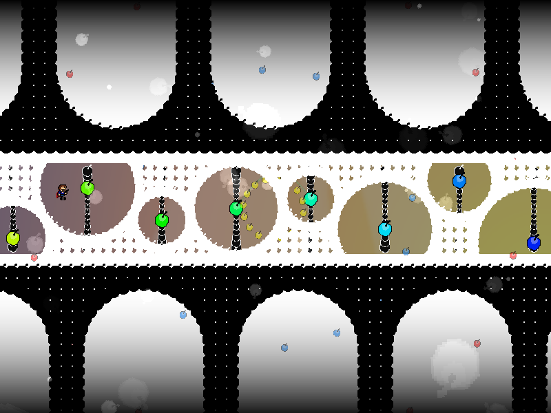
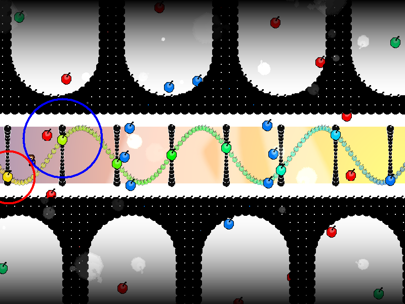
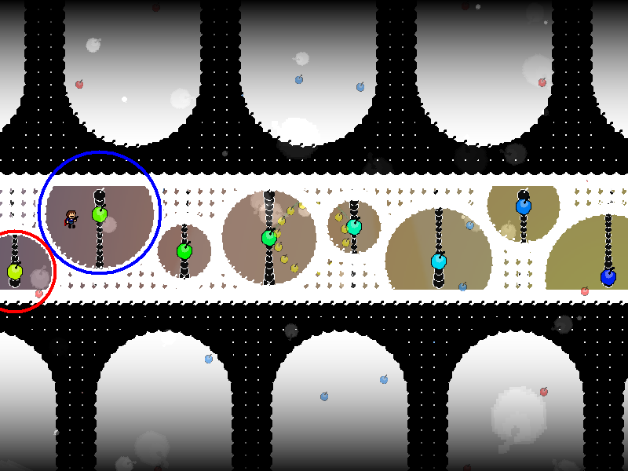
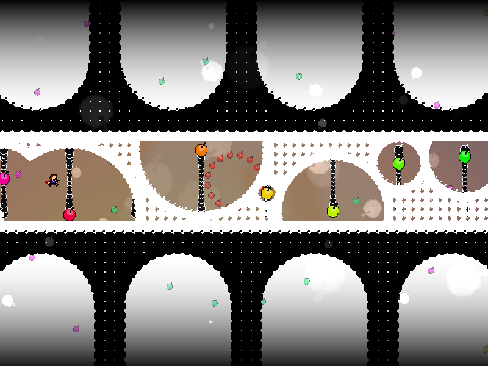
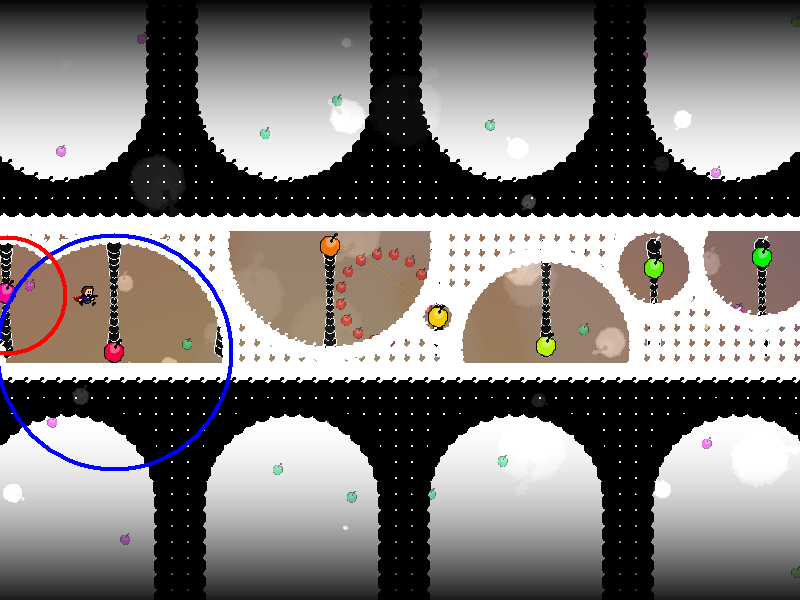
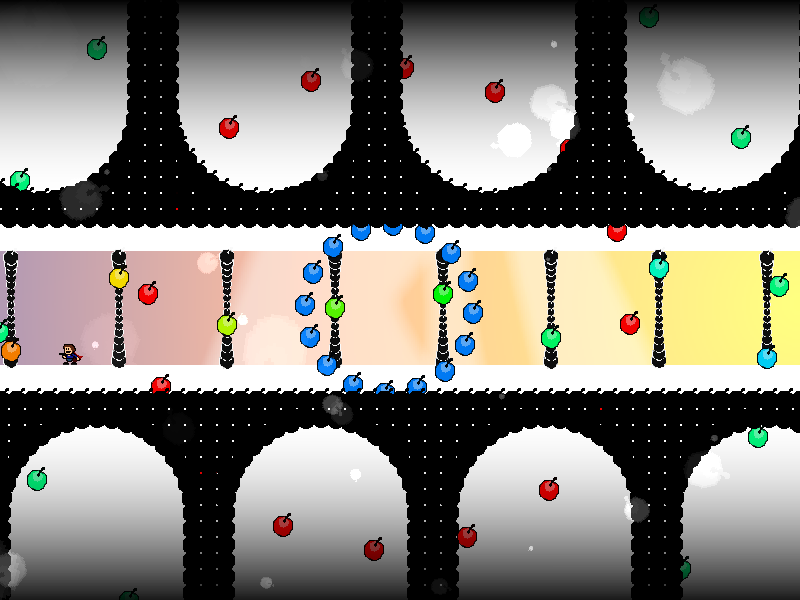

chapter5 - section2

| creator | segment | label | jump |
|---|---|---|---|
| NN | 1:07.20~1:13.60 | R | infinite |
反復型の弾幕です。
fig.5-2.1に示す、周期的に生成される白色の帯状弾幕に関して、これらは形成される空間がプレイヤーの動きによって決定されます。

具体的には、プレイヤーが滞在する列の左右に存在する虹色の弾を中心として生成される円形領域に関して、その半径が帯状弾幕の生成が開始する15step前（画面左右から生成される正弦波状弾幕が画面中央に到達する瞬間）のプレイヤーの位置を基準として決定されます（fig.5-2.2.a, fig.5-2.2.b）。
与えられた状況に対して、円形領域の半径の基準となる点を適切に誘導することで、回避に十分な空間を作り出すことを目的としています。


なお、それぞれの円形領域に関してその内側に空間が形成されることから、円形領域が重複している場合にはそれらの形状が欠ける場合があります（fig.5-2.3.a, fig.5-2.3,b）。


また、画面下部に出現する足場を適宜用いることによって攻略がしやすくなるかもしれません（fig.5-2.4）。
